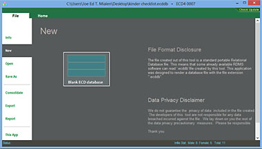
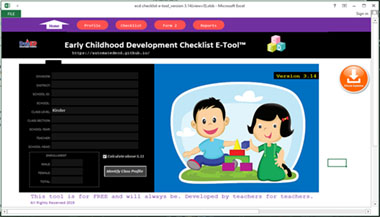
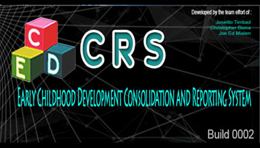

Projects
-

ECD E-Tool 4
ECD E-Tool 4 is the tool we developed in Project AUTOMATEDECD. ECD E-Tool 4 addresses the issue in high incompatability issue of ECD E-Tool Version 3. ECD E-Tool 3 is an Excel macro enabled binary file that obviously runs only on MS Excel. During orientation and deployment, some teachers may have MS Excel installed and other have not, and now ECD E-Tool 4 is to the rescue...
Learn More -

ECD E-Tool Version 3
Automate your ECD Checklist with the ECD E-Tool (Early Childhood Development Checklist Electronic Tool).The ECD E-Tool is an electronic Early Childhood Checklist.It was designed and developed with its core functionalities are based on the Revised Philippine Early Childhood Development Checklist...
Learn More -

ECD Consolidation and Reporting System (ECD CRS)
ECD CRS is used for efficient data gathering consolidation and reporting of data from ECD E-Tool Version 3 that can be utilized by the DepEd personnel from School to Division level....
Learn More